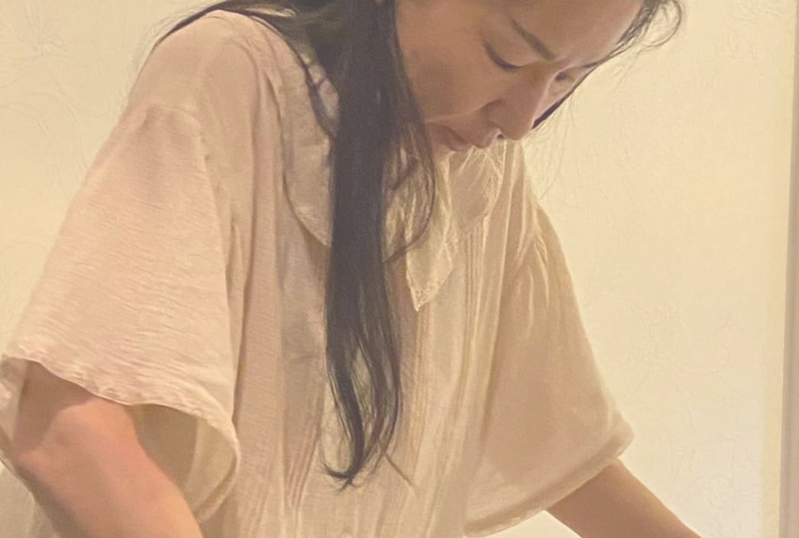

1
カウンセリング
今の体の状態や気になっていること、これまでの経緯をゆっくりお聞きします。うまく話そうとしなくて大丈夫です。
Flow
当日は、こんなふうに進みます。
初めての方も、安心していらしてください。

体のパターンとストーリーを読み解き、
新しい可能性を引き出します。
時間に追われる毎日を、いったん横に置いて。
ここでは、ゆったり過ごしてください。
1
今の体の状態や気になっていること、これまでの経緯をゆっくりお聞きします。うまく話そうとしなくて大丈夫です。
2
足元から温まりながら、ほっとひと息。体がゆるみはじめる、静かな時間です。
3
立ち方や動き方から、体のパターンを一緒に確認します。ご自身の体を知る時間でもあります。
4
その日の体に合わせて、ていねいに整えていきます。
5
整った体のうちに、ご自宅でも続けられる体操をお伝えします。あなたの体に合わせた、あなた用の体操です。
6
施術のあとの変化や、日々の過ごし方について、オンラインでもご相談いただけます。
料金やコースの詳細は、サービスのページをご覧ください。
サービス・料金を見る ›